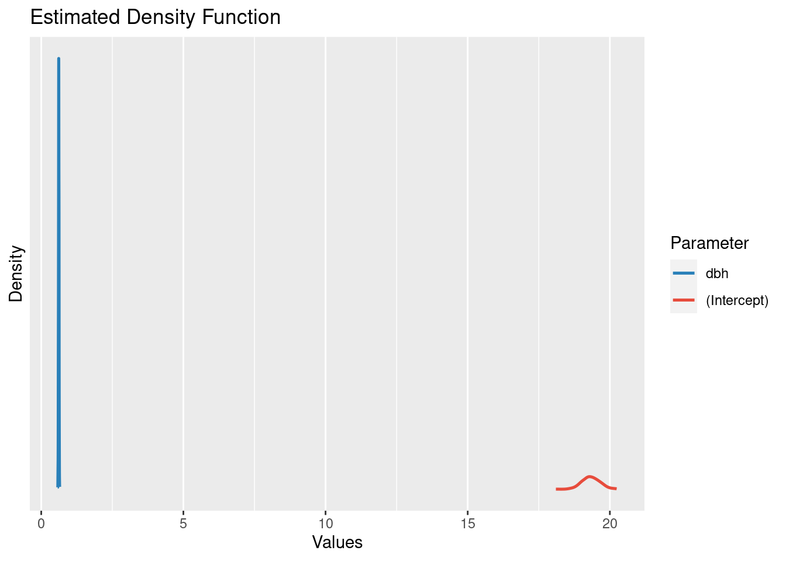
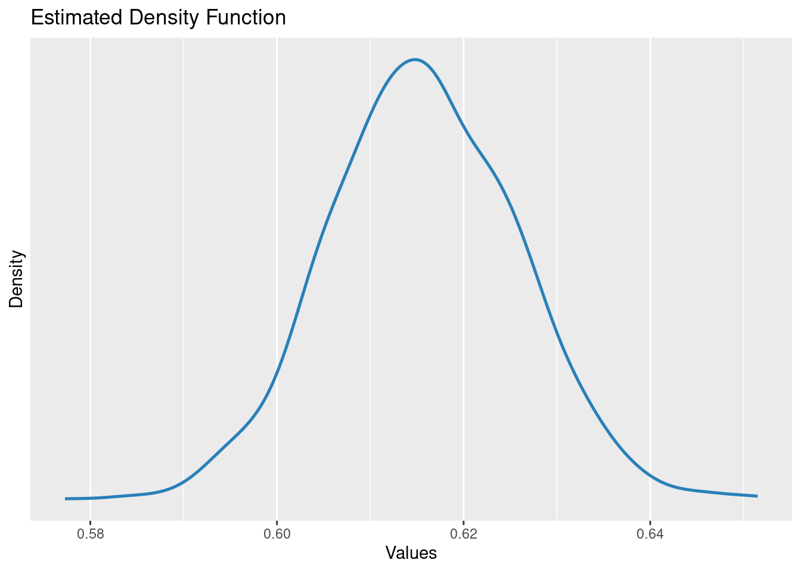
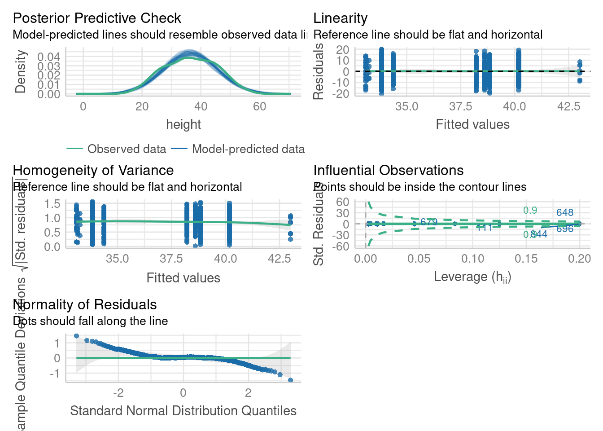

download.file("https://raw.githubusercontent.com/Pakillo/LM-GLM-GLMM-intro/trees/data/trees.csv",
destfile = "trees.csv", mode = "wb")Linear models
A simple linear model
Example dataset: forest trees
- Download this dataset
- Import:
trees <- read.csv("trees.csv")
head(trees) site dbh height sex dead
1 4 29.68 36.1 male 0
2 5 33.29 42.3 male 0
3 2 28.03 41.9 female 0
4 5 39.86 46.5 female 0
5 1 47.94 43.9 female 0
6 1 10.82 26.2 male 0Questions
What is the relationship between DBH and height?
Do taller trees have bigger trunks?
Can we predict height from DBH? How well?
Plot your data first!
Exploratory Data Analysis (EDA)
Outliers
plot(trees$height)Histogram of response variable
hist(trees$height)Histogram of predictor variable
hist(trees$dbh)Scatterplot
plot(height ~ dbh, data = trees, las = 1)Model fitting
Now fit model
Hint: lm
m1 <- lm(height ~ dbh, data = trees)which corresponds to
\[ \begin{aligned} Height_{i} = a + b \cdot DBH_{i} + \varepsilon _{i} \\ \varepsilon _{i}\sim N\left( 0,\sigma^2 \right) \\ \end{aligned} \]
Package equatiomatic returns model structure
library("equatiomatic")
m1 <- lm(height ~ dbh, data = trees)
equatiomatic::extract_eq(m1)equatiomatic::extract_eq(m1, use_coefs = TRUE)Model interpretation
What does this mean?
summary(m1)
Call:
lm(formula = height ~ dbh, data = trees)
Residuals:
Min 1Q Median 3Q Max
-13.3270 -2.8978 0.1057 2.7924 12.9511
Coefficients:
Estimate Std. Error t value Pr(>|t|)
(Intercept) 19.33920 0.31064 62.26 <2e-16 ***
dbh 0.61570 0.01013 60.79 <2e-16 ***
---
Signif. codes: 0 '***' 0.001 '**' 0.01 '*' 0.05 '.' 0.1 ' ' 1
Residual standard error: 4.093 on 998 degrees of freedom
Multiple R-squared: 0.7874, Adjusted R-squared: 0.7871
F-statistic: 3695 on 1 and 998 DF, p-value: < 2.2e-16Estimated distribution of the intercept parameter
library("easystats")# Attaching packages: easystats 0.7.0
✔ bayestestR 0.13.1 ✔ correlation 0.8.4
✔ datawizard 0.9.0 ✔ effectsize 0.8.6
✔ insight 0.19.6 ✔ modelbased 0.8.6
✔ performance 0.10.8 ✔ parameters 0.21.3
✔ report 0.5.7 ✔ see 0.8.1 parameters(m1)[1,]Parameter | Coefficient | SE | 95% CI | t(998) | p
-------------------------------------------------------------------
(Intercept) | 19.34 | 0.31 | [18.73, 19.95] | 62.26 | < .001
Uncertainty intervals (equal-tailed) and p-values (two-tailed) computed
using a Wald t-distribution approximation.plot(simulate_parameters(m1), show_intercept = TRUE)
Estimated distribution of the slope parameter
parameters::parameters(m1)[2,]Parameter | Coefficient | SE | 95% CI | t(998) | p
---------------------------------------------------------------
dbh | 0.62 | 0.01 | [0.60, 0.64] | 60.79 | < .001
Uncertainty intervals (equal-tailed) and p-values (two-tailed) computed
using a Wald t-distribution approximation.plot(simulate_parameters(m1))
Distribution of residuals
hist(residuals(m1))Degrees of freedom
DF = n - p
n = sample size
p = number of estimated parameters
R-squared
Proportion of ‘explained’ variance
\(R^{2} = 1 - \frac{webr-residual Variation}{Total Variation}\)
Adjusted R-squared
Accounts for model complexity
(number of parameters)
\(R^2_{adj} = 1 - (1 - R^2) \frac{n - 1}{n - p - 1}\)
Quiz
https://pollev.com/franciscorod726
Retrieving model coefficients
coef(m1)(Intercept) dbh
19.3391968 0.6157036 Confidence intervals for parameters
confint(m1) 2.5 % 97.5 %
(Intercept) 18.7296053 19.948788
dbh 0.5958282 0.635579Retrieving model parameters (easystats)
parameters(m1)Parameter | Coefficient | SE | 95% CI | t(998) | p
-------------------------------------------------------------------
(Intercept) | 19.34 | 0.31 | [18.73, 19.95] | 62.26 | < .001
dbh | 0.62 | 0.01 | [ 0.60, 0.64] | 60.79 | < .001
Uncertainty intervals (equal-tailed) and p-values (two-tailed) computed
using a Wald t-distribution approximation.Communicating results
Avoid dichotomania of statistical significance
“Never conclude there is ‘no difference’ or ‘no association’ just because p > 0.05 or CI includes zero”
Estimate and communicate effect sizes and their uncertainty
https://doi.org/10.1038/d41586-019-00857-9
Communicating results
We found a significant relationship between DBH and Height (p<0.05).
We found a {significant} positive relationship between DBH and Height {(p<0.05)} (b = 0.61, SE = 0.01).
(add p-value if you wish)
Models that describe themselves (easystats)
report(m1)We fitted a linear model (estimated using OLS) to predict height with dbh
(formula: height ~ dbh). The model explains a statistically significant and
substantial proportion of variance (R2 = 0.79, F(1, 998) = 3695.40, p < .001,
adj. R2 = 0.79). The model's intercept, corresponding to dbh = 0, is at 19.34
(95% CI [18.73, 19.95], t(998) = 62.26, p < .001). Within this model:
- The effect of dbh is statistically significant and positive (beta = 0.62, 95%
CI [0.60, 0.64], t(998) = 60.79, p < .001; Std. beta = 0.89, 95% CI [0.86,
0.92])
Standardized parameters were obtained by fitting the model on a standardized
version of the dataset. 95% Confidence Intervals (CIs) and p-values were
computed using a Wald t-distribution approximation.Generating table with model results: modelsummary
library("modelsummary")
Attaching package: 'modelsummary'The following object is masked from 'package:parameters':
supported_modelsThe following object is masked from 'package:insight':
supported_modelsmodelsummary(m1, output = "html") ## Word, PDF, PowerPoint, png...| (1) | |
|---|---|
| (Intercept) | 19.339 |
| (0.311) | |
| dbh | 0.616 |
| (0.010) | |
| Num.Obs. | 1000 |
| R2 | 0.787 |
| R2 Adj. | 0.787 |
| AIC | 5660.3 |
| BIC | 5675.0 |
| Log.Lik. | −2827.125 |
| F | 3695.395 |
| RMSE | 4.09 |
Generating table with model results: modelsummary
modelsummary(m1, fmt = 2,
estimate = "{estimate} ({std.error})",
statistic = NULL,
gof_map = c("nobs", "r.squared", "rmse"),
output = "html")| (1) | |
|---|---|
| (Intercept) | 19.34 (0.31) |
| dbh | 0.62 (0.01) |
| Num.Obs. | 1000 |
| R2 | 0.787 |
| RMSE | 4.09 |
Visualising fitted model
Plot model: visreg
library("visreg")visreg(m1)visreg can use ggplot2 too
visreg(m1, gg = TRUE) + theme_bw()Plot (easystats)
plot(estimate_expectation(m1))
Plot (modelsummary)
modelplot(m1)Plot model parameters with easystats (see package)
plot(parameters(m1), show_intercept = TRUE, show_labels = TRUE)
Plot parameters’ estimated distribution
plot(simulate_parameters(m1))Model checking
Linear model assumptions
Linearity (transformations, GAM…)
Residuals:
- Independent
- Equal variance
- Normal
Negligible measurement error in predictors
Are residuals normal?
hist(residuals(m1))
SD = 4.09
Model checking: plot(model)
def.par <- par(no.readonly = TRUE)
layout(matrix(1:4, nrow=2))
plot(m1)par(def.par)Model checking with performance (easystats)
check_model(m1)https://easystats.github.io/performance/articles/check_model.html
A dashboard to explore the full model
model_dashboard(m1)Making predictions with easystats
Estimate expected values
pred <- estimate_expectation(m1)
head(pred)Model-based Expectation
dbh | Predicted | SE | 95% CI | Residuals
-----------------------------------------------------
29.68 | 37.61 | 0.13 | [37.36, 37.87] | -1.51
33.29 | 39.84 | 0.14 | [39.56, 40.11] | 2.46
28.03 | 36.60 | 0.13 | [36.34, 36.85] | 5.30
39.86 | 43.88 | 0.18 | [43.53, 44.23] | 2.62
47.94 | 48.86 | 0.24 | [48.38, 49.33] | -4.96
10.82 | 26.00 | 0.22 | [25.58, 26.42] | 0.20
Variable predicted: heightExpected values given DBH
plot(estimate_expectation(m1))
Calibration plot: observed vs predicted
pred$height.obs <- trees$height
plot(height.obs ~ Predicted, data = pred, xlim = c(15, 60), ylim = c(15, 60))
abline(a = 0, b = 1)Estimate prediction interval
Accounting for residual variation!
pred <- estimate_prediction(m1)
head(pred)Model-based Prediction
dbh | Predicted | SE | 95% CI | Residuals
-----------------------------------------------------
29.68 | 37.61 | 4.09 | [29.58, 45.65] | -1.51
33.29 | 39.84 | 4.10 | [31.80, 47.87] | 2.46
28.03 | 36.60 | 4.09 | [28.56, 44.63] | 5.30
39.86 | 43.88 | 4.10 | [35.84, 51.92] | 2.62
47.94 | 48.86 | 4.10 | [40.81, 56.90] | -4.96
10.82 | 26.00 | 4.10 | [17.96, 34.04] | 0.20
Variable predicted: heightConfidence vs Prediction interval
plot(estimate_expectation(m1))
plot(estimate_prediction(m1))Make predictions for new data
estimate_expectation(m1, data = data.frame(dbh = 39))Model-based Expectation
dbh | Predicted | SE | 95% CI
-----------------------------------------
39.00 | 43.35 | 0.17 | [43.01, 43.69]
Variable predicted: heightestimate_prediction(m1, data = data.frame(dbh = 39))Model-based Prediction
dbh | Predicted | SE | 95% CI
-----------------------------------------
39.00 | 43.35 | 4.10 | [35.31, 51.39]
Variable predicted: heightWorkflow
Visualise data
Understand fitted model (
summary)Visualise model (
visreg…)Check model (
plot,check_model, calibration plot…)Predict (
predict,estimate_expectation,estimate_prediction)
Categorical predictors (factors)
Q: Does tree height vary with sex?
boxplot(height ~ sex, data = trees)Model height ~ sex
m2 <- lm(height ~ sex, data = trees)
summary(m2)
Call:
lm(formula = height ~ sex, data = trees)
Residuals:
Min 1Q Median 3Q Max
-22.6881 -6.7881 -0.0097 6.7261 22.3687
Coefficients:
Estimate Std. Error t value Pr(>|t|)
(Intercept) 36.9312 0.3981 92.778 <2e-16 ***
sexmale -0.8432 0.5607 -1.504 0.133
---
Signif. codes: 0 '***' 0.001 '**' 0.01 '*' 0.05 '.' 0.1 ' ' 1
Residual standard error: 8.865 on 998 degrees of freedom
Multiple R-squared: 0.002261, Adjusted R-squared: 0.001261
F-statistic: 2.261 on 1 and 998 DF, p-value: 0.133Linear model with categorical predictors
m2 <- lm(height ~ sex, data = trees)corresponds to
\[ \begin{aligned} Height_{i} = a + b_{male} + \varepsilon _{i} \\ \varepsilon _{i}\sim N\left( 0,\sigma^2 \right) \\ \end{aligned} \]
Model height ~ sex
m2 <- lm(height ~ sex, data = trees)
summary(m2)
Call:
lm(formula = height ~ sex, data = trees)
Residuals:
Min 1Q Median 3Q Max
-22.6881 -6.7881 -0.0097 6.7261 22.3687
Coefficients:
Estimate Std. Error t value Pr(>|t|)
(Intercept) 36.9312 0.3981 92.778 <2e-16 ***
sexmale -0.8432 0.5607 -1.504 0.133
---
Signif. codes: 0 '***' 0.001 '**' 0.01 '*' 0.05 '.' 0.1 ' ' 1
Residual standard error: 8.865 on 998 degrees of freedom
Multiple R-squared: 0.002261, Adjusted R-squared: 0.001261
F-statistic: 2.261 on 1 and 998 DF, p-value: 0.133Quiz
https://pollev.com/franciscorod726
Let’s read the model report…
report(m2)We fitted a linear model (estimated using OLS) to predict height with sex
(formula: height ~ sex). The model explains a statistically not significant and
very weak proportion of variance (R2 = 2.26e-03, F(1, 998) = 2.26, p = 0.133,
adj. R2 = 1.26e-03). The model's intercept, corresponding to sex = female, is
at 36.93 (95% CI [36.15, 37.71], t(998) = 92.78, p < .001). Within this model:
- The effect of sex [male] is statistically non-significant and negative (beta
= -0.84, 95% CI [-1.94, 0.26], t(998) = -1.50, p = 0.133; Std. beta = -0.10,
95% CI [-0.22, 0.03])
Standardized parameters were obtained by fitting the model on a standardized
version of the dataset. 95% Confidence Intervals (CIs) and p-values were
computed using a Wald t-distribution approximation.Estimated distribution of the intercept parameter
Intercept = Height of females
parameters(m2)[1,]Parameter | Coefficient | SE | 95% CI | t(998) | p
-------------------------------------------------------------------
(Intercept) | 36.93 | 0.40 | [36.15, 37.71] | 92.78 | < .001
Uncertainty intervals (equal-tailed) and p-values (two-tailed) computed
using a Wald t-distribution approximation.plot(simulate_parameters(m2), show_intercept = TRUE)Estimated distribution of the beta parameter
beta = height difference of males vs females
parameters(m2)[2,]Parameter | Coefficient | SE | 95% CI | t(998) | p
----------------------------------------------------------------
sex [male] | -0.84 | 0.56 | [-1.94, 0.26] | -1.50 | 0.133
Uncertainty intervals (equal-tailed) and p-values (two-tailed) computed
using a Wald t-distribution approximation.plot(simulate_parameters(m2))Analysing differences among factor levels
estimate_means(m2)We selected `at = c("sex")`.Estimated Marginal Means
sex | Mean | SE | 95% CI
--------------------------------------
male | 36.09 | 0.39 | [35.31, 36.86]
female | 36.93 | 0.40 | [36.15, 37.71]
Marginal means estimated at sexestimate_contrasts(m2)No variable was specified for contrast estimation. Selecting `contrast = "sex"`.Marginal Contrasts Analysis
Level1 | Level2 | Difference | 95% CI | SE | t(998) | p
--------------------------------------------------------------------
male | female | -0.84 | [-1.94, 0.26] | 0.56 | -1.50 | 0.133
Marginal contrasts estimated at sex
p-value adjustment method: Holm (1979)Visualising the fitted model
Plot (visreg)
visreg(m2)Plot (easystats)
plot(estimate_means(m2))We selected `at = c("sex")`.Model checking
Model checking: residuals
hist(resid(m2))def.par <- par(no.readonly = TRUE)
layout(matrix(1:4, nrow=2))
plot(m2)par(def.par)Model checking (easystats)
check_model(m2)Q: Does height differ among field sites?
Quiz
https://pollev.com/franciscorod726
Plot data first
plot(height ~ site, data = trees)
Linear model with categorical predictors
m3 <- lm(height ~ site, data = trees)\[ \begin{aligned} y_{i} = a + b_{site2} + c_{site3} + d_{site4} + e_{site5} +...+ \varepsilon _{i} \\ \varepsilon _{i}\sim N\left( 0,\sigma^2 \right) \\ \end{aligned} \]
Model Height ~ site
All right here?
m3 <- lm(height ~ site, data = trees)
summary(m3)
Call:
lm(formula = height ~ site, data = trees)
Residuals:
Min 1Q Median 3Q Max
-22.4498 -6.7049 0.0709 6.7537 23.0640
Coefficients:
Estimate Std. Error t value Pr(>|t|)
(Intercept) 35.4636 0.4730 74.975 < 2e-16 ***
site 0.3862 0.1413 2.733 0.00639 **
---
Signif. codes: 0 '***' 0.001 '**' 0.01 '*' 0.05 '.' 0.1 ' ' 1
Residual standard error: 8.842 on 998 degrees of freedom
Multiple R-squared: 0.007429, Adjusted R-squared: 0.006435
F-statistic: 7.47 on 1 and 998 DF, p-value: 0.006385site is a factor!
trees$site <- as.factor(trees$site)Model Height ~ site
m3 <- lm(height ~ site, data = trees)
summary(m3)
Call:
lm(formula = height ~ site, data = trees)
Residuals:
Min 1Q Median 3Q Max
-20.4416 -6.9004 0.0379 6.3051 19.7584
Coefficients:
Estimate Std. Error t value Pr(>|t|)
(Intercept) 33.8416 0.4266 79.329 < 2e-16 ***
site2 6.3411 0.7126 8.899 < 2e-16 ***
site3 4.9991 0.9828 5.086 4.36e-07 ***
site4 0.5329 0.9872 0.540 0.58949
site5 4.3723 0.9425 4.639 3.97e-06 ***
site6 4.7601 1.1709 4.065 5.18e-05 ***
site7 -0.7416 1.8506 -0.401 0.68871
site8 -0.6832 2.4753 -0.276 0.78258
site9 9.1709 3.0165 3.040 0.00243 **
site10 -0.5816 3.8013 -0.153 0.87843
---
Signif. codes: 0 '***' 0.001 '**' 0.01 '*' 0.05 '.' 0.1 ' ' 1
Residual standard error: 8.446 on 990 degrees of freedom
Multiple R-squared: 0.1016, Adjusted R-squared: 0.09344
F-statistic: 12.44 on 9 and 990 DF, p-value: < 2.2e-16Estimated parameter distributions
plot(simulate_parameters(m3))
Estimated tree heights for each site
estimate_means(m3)We selected `at = c("site")`.Estimated Marginal Means
site | Mean | SE | 95% CI
------------------------------------
1 | 33.84 | 0.43 | [33.00, 34.68]
2 | 40.18 | 0.57 | [39.06, 41.30]
3 | 38.84 | 0.89 | [37.10, 40.58]
4 | 34.37 | 0.89 | [32.63, 36.12]
5 | 38.21 | 0.84 | [36.56, 39.86]
6 | 38.60 | 1.09 | [36.46, 40.74]
7 | 33.10 | 1.80 | [29.57, 36.63]
8 | 33.16 | 2.44 | [28.37, 37.94]
9 | 43.01 | 2.99 | [37.15, 48.87]
10 | 33.26 | 3.78 | [25.85, 40.67]
Marginal means estimated at sitePlot estimated tree heights for each site
plot(estimate_means(m3))We selected `at = c("site")`.Analysing differences among factor levels
For finer control see emmeans package
estimate_contrasts(m3)No variable was specified for contrast estimation. Selecting `contrast = "site"`.Marginal Contrasts Analysis
Level1 | Level2 | Difference | 95% CI | SE | t(990) | p
-----------------------------------------------------------------------
site1 | site10 | 0.58 | [-11.85, 13.01] | 3.80 | 0.15 | > .999
site1 | site2 | -6.34 | [ -8.67, -4.01] | 0.71 | -8.90 | < .001
site1 | site3 | -5.00 | [ -8.21, -1.78] | 0.98 | -5.09 | < .001
site1 | site4 | -0.53 | [ -3.76, 2.70] | 0.99 | -0.54 | > .999
site1 | site5 | -4.37 | [ -7.45, -1.29] | 0.94 | -4.64 | < .001
site1 | site6 | -4.76 | [ -8.59, -0.93] | 1.17 | -4.07 | 0.002
site1 | site7 | 0.74 | [ -5.31, 6.79] | 1.85 | 0.40 | > .999
site1 | site8 | 0.68 | [ -7.41, 8.78] | 2.48 | 0.28 | > .999
site1 | site9 | -9.17 | [-19.04, 0.69] | 3.02 | -3.04 | 0.090
site2 | site10 | 6.92 | [ -5.57, 19.42] | 3.82 | 1.81 | > .999
site2 | site3 | 1.34 | [ -2.10, 4.79] | 1.05 | 1.27 | > .999
site2 | site4 | 5.81 | [ 2.35, 9.27] | 1.06 | 5.49 | < .001
site2 | site5 | 1.97 | [ -1.35, 5.29] | 1.02 | 1.94 | > .999
site2 | site6 | 1.58 | [ -2.44, 5.61] | 1.23 | 1.28 | > .999
site2 | site7 | 7.08 | [ 0.90, 13.26] | 1.89 | 3.75 | 0.008
site2 | site8 | 7.02 | [ -1.17, 15.21] | 2.50 | 2.81 | 0.169
site2 | site9 | -2.83 | [-12.77, 7.11] | 3.04 | -0.93 | > .999
site3 | site10 | 5.58 | [ -7.11, 18.27] | 3.88 | 1.44 | > .999
site3 | site4 | 4.47 | [ 0.36, 8.57] | 1.26 | 3.56 | 0.015
site3 | site5 | 0.63 | [ -3.37, 4.62] | 1.22 | 0.51 | > .999
site3 | site6 | 0.24 | [ -4.35, 4.83] | 1.40 | 0.17 | > .999
site3 | site7 | 5.74 | [ -0.82, 12.30] | 2.01 | 2.86 | 0.151
site3 | site8 | 5.68 | [ -2.80, 14.17] | 2.59 | 2.19 | 0.804
site3 | site9 | -4.17 | [-14.36, 6.01] | 3.11 | -1.34 | > .999
site4 | site10 | 1.11 | [-11.58, 13.81] | 3.88 | 0.29 | > .999
site4 | site5 | -3.84 | [ -7.84, 0.16] | 1.22 | -3.14 | 0.067
site4 | site6 | -4.23 | [ -8.83, 0.38] | 1.41 | -3.00 | 0.099
site4 | site7 | 1.27 | [ -5.30, 7.84] | 2.01 | 0.63 | > .999
site4 | site8 | 1.22 | [ -7.27, 9.70] | 2.60 | 0.47 | > .999
site4 | site9 | -8.64 | [-18.83, 1.55] | 3.12 | -2.77 | 0.182
site5 | site10 | 4.95 | [ -7.70, 17.61] | 3.87 | 1.28 | > .999
site5 | site6 | -0.39 | [ -4.89, 4.11] | 1.38 | -0.28 | > .999
site5 | site7 | 5.11 | [ -1.39, 11.61] | 1.99 | 2.57 | 0.306
site5 | site8 | 5.06 | [ -3.38, 13.49] | 2.58 | 1.96 | > .999
site5 | site9 | -4.80 | [-14.94, 5.35] | 3.10 | -1.55 | > .999
site6 | site10 | 5.34 | [ -7.52, 18.20] | 3.93 | 1.36 | > .999
site6 | site7 | 5.50 | [ -1.38, 12.39] | 2.11 | 2.61 | 0.282
site6 | site8 | 5.44 | [ -3.29, 14.18] | 2.67 | 2.04 | > .999
site6 | site9 | -4.41 | [-14.81, 5.99] | 3.18 | -1.39 | > .999
site7 | site10 | -0.16 | [-13.85, 13.53] | 4.18 | -0.04 | > .999
site7 | site8 | -0.06 | [ -9.97, 9.85] | 3.03 | -0.02 | > .999
site7 | site9 | -9.91 | [-21.32, 1.49] | 3.49 | -2.84 | 0.155
site8 | site10 | -0.10 | [-14.80, 14.60] | 4.50 | -0.02 | > .999
site8 | site9 | -9.85 | [-22.46, 2.75] | 3.86 | -2.56 | 0.311
site9 | site10 | 9.75 | [ -5.99, 25.50] | 4.82 | 2.03 | > .999
Marginal contrasts estimated at site
p-value adjustment method: Holm (1979)Analysing differences among factor levels
How different are site 2 and site 9?
library("marginaleffects")hypotheses(m3, "site2 = site9")
Term Estimate Std. Error z Pr(>|z|) S 2.5 % 97.5 %
site2 = site9 -2.83 3.04 -0.931 0.352 1.5 -8.79 3.13
Columns: term, estimate, std.error, statistic, p.value, s.value, conf.low, conf.high Presenting model results
parameters(m3)Parameter | Coefficient | SE | 95% CI | t(990) | p
-------------------------------------------------------------------
(Intercept) | 33.84 | 0.43 | [33.00, 34.68] | 79.33 | < .001
site [2] | 6.34 | 0.71 | [ 4.94, 7.74] | 8.90 | < .001
site [3] | 5.00 | 0.98 | [ 3.07, 6.93] | 5.09 | < .001
site [4] | 0.53 | 0.99 | [-1.40, 2.47] | 0.54 | 0.589
site [5] | 4.37 | 0.94 | [ 2.52, 6.22] | 4.64 | < .001
site [6] | 4.76 | 1.17 | [ 2.46, 7.06] | 4.07 | < .001
site [7] | -0.74 | 1.85 | [-4.37, 2.89] | -0.40 | 0.689
site [8] | -0.68 | 2.48 | [-5.54, 4.17] | -0.28 | 0.783
site [9] | 9.17 | 3.02 | [ 3.25, 15.09] | 3.04 | 0.002
site [10] | -0.58 | 3.80 | [-8.04, 6.88] | -0.15 | 0.878
Uncertainty intervals (equal-tailed) and p-values (two-tailed) computed
using a Wald t-distribution approximation.modelsummary(m3, estimate = "{estimate} ({std.error})", statistic = NULL,
fmt = 1, gof_map = NA, coef_rename = paste0("site", 1:10), output = "html")| (1) | |
|---|---|
| site1 | 33.8 (0.4) |
| site2 | 6.3 (0.7) |
| site3 | 5.0 (1.0) |
| site4 | 0.5 (1.0) |
| site5 | 4.4 (0.9) |
| site6 | 4.8 (1.2) |
| site7 | −0.7 (1.9) |
| site8 | −0.7 (2.5) |
| site9 | 9.2 (3.0) |
| site10 | −0.6 (3.8) |
Plot (visreg)
visreg(m3)Plot (easystats)
plot(estimate_means(m3))We selected `at = c("site")`.
Plot model (modelsummary)
modelplot(m3)Plot model (easystats)
plot(parameters(m3), show_intercept = TRUE)Fit model without intercept
m3bis <- lm(height ~ site - 1, data = trees)
summary(m3bis)
Call:
lm(formula = height ~ site - 1, data = trees)
Residuals:
Min 1Q Median 3Q Max
-20.4416 -6.9004 0.0379 6.3051 19.7584
Coefficients:
Estimate Std. Error t value Pr(>|t|)
site1 33.8416 0.4266 79.329 <2e-16 ***
site2 40.1826 0.5707 70.404 <2e-16 ***
site3 38.8407 0.8854 43.868 <2e-16 ***
site4 34.3744 0.8903 38.610 <2e-16 ***
site5 38.2139 0.8404 45.469 <2e-16 ***
site6 38.6017 1.0904 35.401 <2e-16 ***
site7 33.1000 1.8007 18.381 <2e-16 ***
site8 33.1583 2.4382 13.599 <2e-16 ***
site9 43.0125 2.9862 14.404 <2e-16 ***
site10 33.2600 3.7773 8.805 <2e-16 ***
---
Signif. codes: 0 '***' 0.001 '**' 0.01 '*' 0.05 '.' 0.1 ' ' 1
Residual standard error: 8.446 on 990 degrees of freedom
Multiple R-squared: 0.95, Adjusted R-squared: 0.9495
F-statistic: 1879 on 10 and 990 DF, p-value: < 2.2e-16plot(parameters(m3bis))Model checking: residuals
def.par <- par(no.readonly = TRUE)
layout(matrix(1:4, nrow = 2))
plot(m3)par(def.par)Model checking: residuals
check_model(m3)
Combining continuous and categorical predictors
Predicting tree height based on dbh and site
lm(height ~ site + dbh, data = trees)
Call:
lm(formula = height ~ site + dbh, data = trees)
Coefficients:
(Intercept) site2 site3 site4 site5 site6
16.6990 6.5043 4.3575 1.9347 3.6374 4.2045
site7 site8 site9 site10 dbh
-0.1762 -5.3126 5.4370 2.2633 0.6171 corresponds to
\[ \begin{aligned} y_{i} = a + b_{site2} + c_{site3} + d_{site4} + e_{site5} +...+ k \cdot DBH_{i} + \varepsilon _{i} \\ \varepsilon _{i}\sim N\left( 0,\sigma^2 \right) \\ \end{aligned} \]
Predicting tree height based on dbh and site
m4 <- lm(height ~ site + dbh, data = trees)
summary(m4)
Call:
lm(formula = height ~ site + dbh, data = trees)
Residuals:
Min 1Q Median 3Q Max
-10.1130 -1.9885 0.0582 2.0314 11.3320
Coefficients:
Estimate Std. Error t value Pr(>|t|)
(Intercept) 16.699037 0.260565 64.088 < 2e-16 ***
site2 6.504303 0.256730 25.335 < 2e-16 ***
site3 4.357457 0.354181 12.303 < 2e-16 ***
site4 1.934650 0.356102 5.433 6.98e-08 ***
site5 3.637432 0.339688 10.708 < 2e-16 ***
site6 4.204511 0.421906 9.966 < 2e-16 ***
site7 -0.176193 0.666772 -0.264 0.7916
site8 -5.312648 0.893603 -5.945 3.82e-09 ***
site9 5.437049 1.087766 4.998 6.84e-07 ***
site10 2.263338 1.369986 1.652 0.0988 .
dbh 0.617075 0.007574 81.473 < 2e-16 ***
---
Signif. codes: 0 '***' 0.001 '**' 0.01 '*' 0.05 '.' 0.1 ' ' 1
Residual standard error: 3.043 on 989 degrees of freedom
Multiple R-squared: 0.8835, Adjusted R-squared: 0.8823
F-statistic: 750 on 10 and 989 DF, p-value: < 2.2e-16Presenting model results
parameters(m4)Parameter | Coefficient | SE | 95% CI | t(989) | p
-----------------------------------------------------------------------
(Intercept) | 16.70 | 0.26 | [16.19, 17.21] | 64.09 | < .001
site [2] | 6.50 | 0.26 | [ 6.00, 7.01] | 25.34 | < .001
site [3] | 4.36 | 0.35 | [ 3.66, 5.05] | 12.30 | < .001
site [4] | 1.93 | 0.36 | [ 1.24, 2.63] | 5.43 | < .001
site [5] | 3.64 | 0.34 | [ 2.97, 4.30] | 10.71 | < .001
site [6] | 4.20 | 0.42 | [ 3.38, 5.03] | 9.97 | < .001
site [7] | -0.18 | 0.67 | [-1.48, 1.13] | -0.26 | 0.792
site [8] | -5.31 | 0.89 | [-7.07, -3.56] | -5.95 | < .001
site [9] | 5.44 | 1.09 | [ 3.30, 7.57] | 5.00 | < .001
site [10] | 2.26 | 1.37 | [-0.43, 4.95] | 1.65 | 0.099
dbh | 0.62 | 7.57e-03 | [ 0.60, 0.63] | 81.47 | < .001
Uncertainty intervals (equal-tailed) and p-values (two-tailed) computed
using a Wald t-distribution approximation.Estimated tree heights for each site
estimate_means(m4)We selected `at = c("site")`.Estimated Marginal Means
site | Mean | SE | 95% CI
------------------------------------
1 | 33.90 | 0.15 | [33.60, 34.21]
2 | 40.41 | 0.21 | [40.01, 40.81]
3 | 38.26 | 0.32 | [37.64, 38.89]
4 | 35.84 | 0.32 | [35.21, 36.47]
5 | 37.54 | 0.30 | [36.95, 38.14]
6 | 38.11 | 0.39 | [37.34, 38.88]
7 | 33.73 | 0.65 | [32.45, 35.00]
8 | 28.59 | 0.88 | [26.86, 30.32]
9 | 39.34 | 1.08 | [37.23, 41.45]
10 | 36.17 | 1.36 | [33.50, 38.84]
Marginal means estimated at siteFit model without intercept
m4 <- lm(height ~ -1 + site + dbh, data = trees)
summary(m4)
Call:
lm(formula = height ~ -1 + site + dbh, data = trees)
Residuals:
Min 1Q Median 3Q Max
-10.1130 -1.9885 0.0582 2.0314 11.3320
Coefficients:
Estimate Std. Error t value Pr(>|t|)
site1 16.699037 0.260565 64.09 <2e-16 ***
site2 23.203340 0.292773 79.25 <2e-16 ***
site3 21.056494 0.386532 54.48 <2e-16 ***
site4 18.633687 0.374456 49.76 <2e-16 ***
site5 20.336469 0.373942 54.38 <2e-16 ***
site6 20.903548 0.448913 46.56 <2e-16 ***
site7 16.522844 0.679936 24.30 <2e-16 ***
site8 11.386389 0.918198 12.40 <2e-16 ***
site9 22.136086 1.105970 20.02 <2e-16 ***
site10 18.962375 1.372158 13.82 <2e-16 ***
dbh 0.617075 0.007574 81.47 <2e-16 ***
---
Signif. codes: 0 '***' 0.001 '**' 0.01 '*' 0.05 '.' 0.1 ' ' 1
Residual standard error: 3.043 on 989 degrees of freedom
Multiple R-squared: 0.9935, Adjusted R-squared: 0.9934
F-statistic: 1.377e+04 on 11 and 989 DF, p-value: < 2.2e-16Plot (visreg)
visreg(m4)visreg(m4, xvar = "dbh", by = "site", overlay = TRUE, band = FALSE)Plot model (easystats)
plot(parameters(m4))Keeping sites only, dropping “dbh”
plot(parameters(m4, drop = "dbh"))Plot model (modelsummary)
modelplot(m4)Keeping sites only, dropping “dbh”
modelplot(m4, coef_omit = "dbh")What happened to site 8?
visreg(m3)
visreg(m4, xvar = "site")
site 8 has the largest diameters:
boxplot(dbh ~ site, data = trees)DBH
aggregate(trees$dbh ~ trees$site, FUN = mean) trees$site trees$dbh
1 1 27.78033
2 2 27.51580
3 3 28.82011
4 4 25.50867
5 5 28.97119
6 6 28.68067
7 7 26.86409
8 8 35.28250
9 9 33.83125
10 10 23.17000HEIGHT
aggregate(trees$height ~ trees$site, FUN = mean) trees$site trees$height
1 1 33.84158
2 2 40.18265
3 3 38.84066
4 4 34.37444
5 5 38.21386
6 6 38.60167
7 7 33.10000
8 8 33.15833
9 9 43.01250
10 10 33.26000We have fitted model w/ many intercepts and single slope
visreg(m4, xvar = "dbh", by = "site", overlay = TRUE, band = FALSE)
Slope is the same for all sites
parameters(m4, keep = "dbh")Parameter | Coefficient | SE | 95% CI | t(989) | p
-------------------------------------------------------------------
dbh | 0.62 | 7.57e-03 | [0.60, 0.63] | 81.47 | < .001
Uncertainty intervals (equal-tailed) and p-values (two-tailed) computed
using a Wald t-distribution approximation.Model checking: residuals
def.par <- par(no.readonly = TRUE)
layout(matrix(1:4, nrow=2))
plot(m4)par(def.par)Model checking with easystats
check_model(m4)How good is this model? Calibration plot
trees$height.pred <- fitted(m4)
plot(trees$height.pred, trees$height,
xlab = "Tree height (predicted)",
ylab = "Tree height (observed)",
las = 1, xlim = c(10,60), ylim = c(10,60))
abline(a = 0, b = 1)
How good is this model? Calibration plot (easystats)
pred <- estimate_expectation(m4)
pred$obs <- trees$height
plot(obs ~ Predicted, data = pred, xlim = c(15, 60), ylim = c(15, 60))
abline(a = 0, b = 1)Posterior predictive checking
Simulating response data from fitted model (yrep)
and comparing with observed response (y)
check_predictions(m4)Predicting heights of new trees (easystats)
Using model for prediction
Expected height of 10-cm diameter tree in each site?
trees.10cm <- data.frame(site = as.factor(1:10),
dbh = 10)
trees.10cm site dbh
1 1 10
2 2 10
3 3 10
4 4 10
5 5 10
6 6 10
7 7 10
8 8 10
9 9 10
10 10 10Using model for prediction
Expected height of 10-cm DBH trees at each site
pred <- estimate_expectation(m4, data = trees.10cm)
predModel-based Expectation
site | dbh | Predicted | SE | 95% CI
------------------------------------------------
1 | 10.00 | 22.87 | 0.20 | [22.47, 23.27]
2 | 10.00 | 29.37 | 0.24 | [28.89, 29.85]
3 | 10.00 | 27.23 | 0.35 | [26.54, 27.91]
4 | 10.00 | 24.80 | 0.34 | [24.13, 25.47]
5 | 10.00 | 26.51 | 0.34 | [25.85, 27.16]
6 | 10.00 | 27.07 | 0.42 | [26.25, 27.89]
7 | 10.00 | 22.69 | 0.66 | [21.40, 23.99]
8 | 10.00 | 17.56 | 0.90 | [15.79, 19.32]
9 | 10.00 | 28.31 | 1.09 | [26.17, 30.45]
10 | 10.00 | 25.13 | 1.36 | [22.46, 27.81]
Variable predicted: heightUsing model for prediction
Prediction intervals (accounting for residual variance)
pred <- estimate_prediction(m4, data = trees.10cm)
predModel-based Prediction
site | dbh | Predicted | SE | 95% CI
------------------------------------------------
1 | 10.00 | 22.87 | 3.05 | [16.88, 28.85]
2 | 10.00 | 29.37 | 3.05 | [23.38, 35.36]
3 | 10.00 | 27.23 | 3.06 | [21.22, 33.24]
4 | 10.00 | 24.80 | 3.06 | [18.80, 30.81]
5 | 10.00 | 26.51 | 3.06 | [20.50, 32.51]
6 | 10.00 | 27.07 | 3.07 | [21.05, 33.10]
7 | 10.00 | 22.69 | 3.11 | [16.58, 28.80]
8 | 10.00 | 17.56 | 3.17 | [11.33, 23.78]
9 | 10.00 | 28.31 | 3.23 | [21.96, 34.65]
10 | 10.00 | 25.13 | 3.33 | [18.59, 31.68]
Variable predicted: heightQ: Does allometric relationship between Height and Diameter vary among sites?
df <- data.frame(dbh = seq(10, 50, by = 1),
height = seq(20, 60, by = 1))
plot(height ~ dbh, data = df, type = "n")
abline(a = 25, 0.6)
abline(a = 40, b = 0.1, col = "steelblue")
abline(a = 50, b = -0.3, col = "orangered")Model with interactions
m5 <- lm(height ~ site*dbh, data = trees)
summary(m5)
Call:
lm(formula = height ~ site * dbh, data = trees)
Residuals:
Min 1Q Median 3Q Max
-10.1017 -1.9839 0.0645 2.0486 11.1789
Coefficients:
Estimate Std. Error t value Pr(>|t|)
(Intercept) 16.359437 0.360054 45.436 < 2e-16 ***
site2 7.684781 0.609657 12.605 < 2e-16 ***
site3 4.518568 0.867008 5.212 2.28e-07 ***
site4 2.769336 0.813259 3.405 0.000688 ***
site5 3.917607 0.870983 4.498 7.68e-06 ***
site6 4.155161 1.009379 4.117 4.17e-05 ***
site7 -2.306799 1.551303 -1.487 0.137334
site8 -2.616095 4.090671 -0.640 0.522630
site9 2.621560 5.073794 0.517 0.605492
site10 4.662340 2.991072 1.559 0.119378
dbh 0.629299 0.011722 53.685 < 2e-16 ***
site2:dbh -0.042784 0.020033 -2.136 0.032950 *
site3:dbh -0.006031 0.027640 -0.218 0.827312
site4:dbh -0.031633 0.028225 -1.121 0.262677
site5:dbh -0.010173 0.027887 -0.365 0.715334
site6:dbh 0.001337 0.032109 0.042 0.966797
site7:dbh 0.079728 0.052056 1.532 0.125951
site8:dbh -0.079027 0.113386 -0.697 0.485984
site9:dbh 0.081035 0.146649 0.553 0.580679
site10:dbh -0.101107 0.114520 -0.883 0.377522
---
Signif. codes: 0 '***' 0.001 '**' 0.01 '*' 0.05 '.' 0.1 ' ' 1
Residual standard error: 3.041 on 980 degrees of freedom
Multiple R-squared: 0.8847, Adjusted R-squared: 0.8825
F-statistic: 395.7 on 19 and 980 DF, p-value: < 2.2e-16Does slope vary among sites?
visreg(m5, xvar = "dbh", by = "site")visreg(m5, xvar = "dbh", by = "site", overlay = TRUE, band = FALSE)END